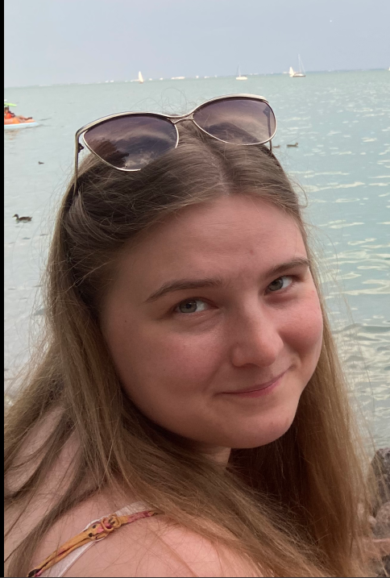

RÓLAM

Külföldi tapasztalatok:
- 2006-2011 Kijev (amerikai iskola)
- 2015-2017 Aberdeen (egyetemi tanulmányok)
- 2019.06-09 Temple-sur-Lot (szakmai gyakorlat)
Tanítási tapasztalat: Magántanítás, csoportos tanítás
- általános nyelvfejlesztés (A1-C1):
- magyar, mint idegen nyelv (A1-C1):
- diákok nemzetisége: francia, indiai, spanyol
- középfokú érettségi felkészítés
- összakkollégiumi francia nyelvi kurzus
- tolmácsvizsga felkészítés
- PROFEX nyelvvizsga felkészítés
Tanulmányok
| 2022-2024 | Semmelweis Egyetem | Egészségtudományi szakfordító- és tolmács |
| 2017-2020 | ELTE Bölcsészettudományi Kar | BA Romanisztika – Francia szak |
| 2019-2020 | Eötvös József Collegium | Atelier d'Études françaises Aurélien Sauvageot |
| 2015-2017 | University of Aberdeen | MA in Mathematics and Economics |